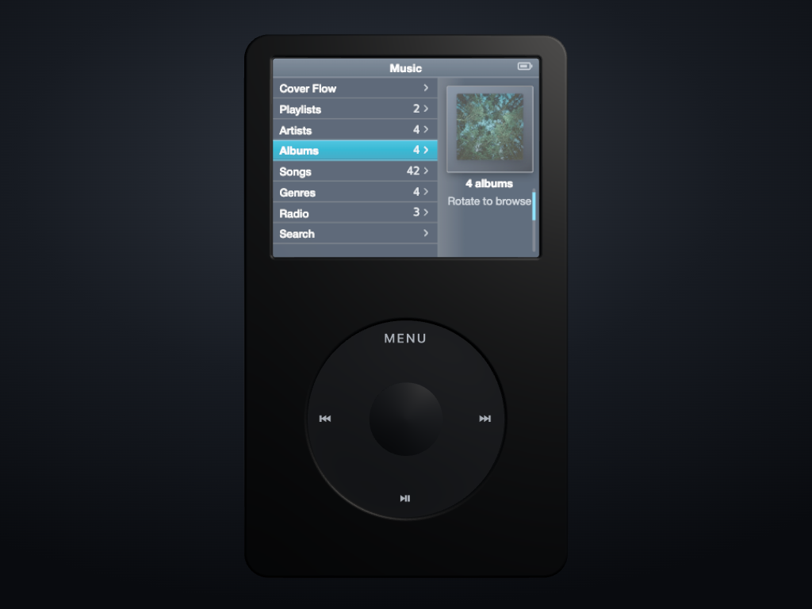
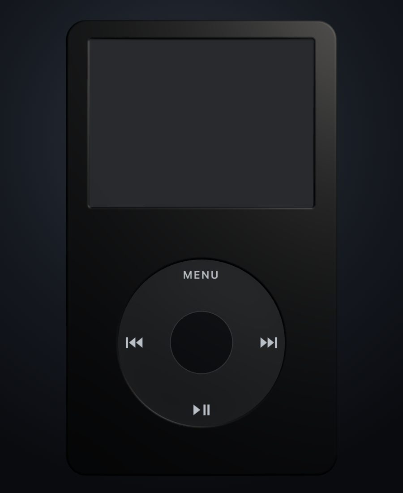
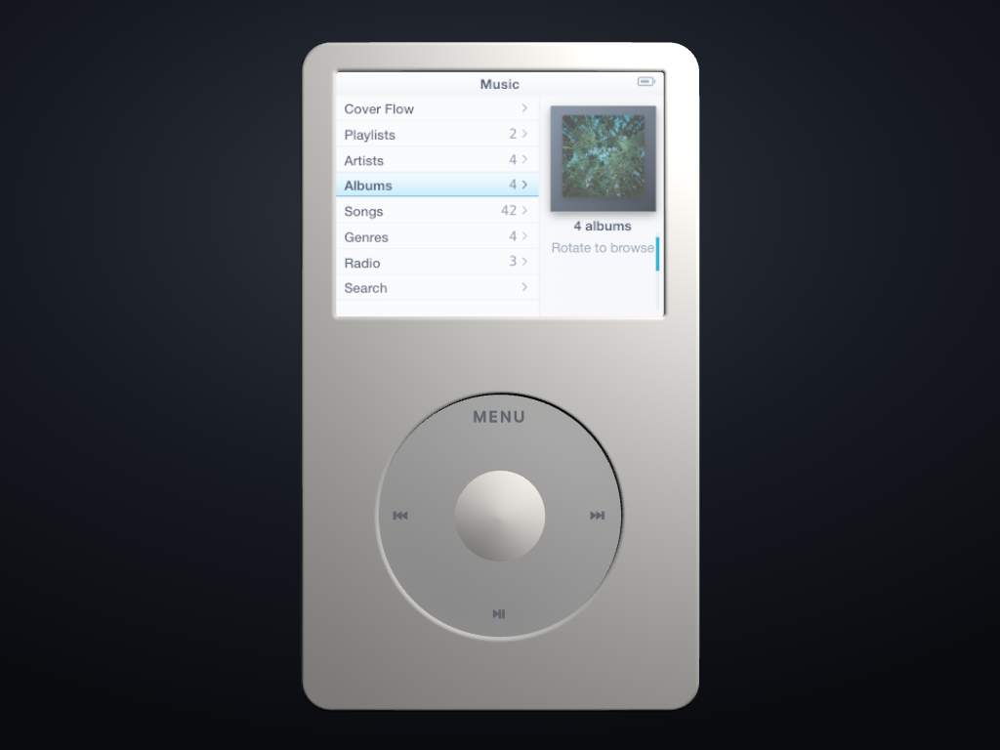

Camera matching is approximate. The board validates topology, visible seam width and colourway hierarchy; it does not claim an unmeasured OEM millimetre depth.
External reference
Prior render
Corrected render
Black frontNo center annulus; charcoal wheel; darker separate Select; pale ink.
Apple official · straight-on product render

Prior · 4-unit Select gap / 4.25-unit wheel inset

Corrected · 1-unit gap / 1-unit wheel inset
White frontPale cool-grey wheel; warm white Select; medium cool-neutral legends.
Apple official · straight-on product render

Prior · deep shadow moat and broad Select boundary